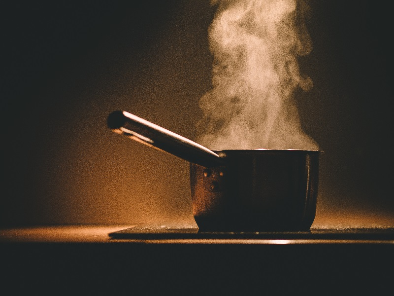

—James Beard
Food is necessary for survival. It is a “need”. It’s quite an obvious statement, but we don’t think of food as an extreme basic anymore. No. We evolved food into a social activity. We escalated food to fine art. Out of the things that we regard highly, food is certainly one that has stood the tests of time.
A great example is the word “Companionship”. It means friend, right? But the word means “one who breaks bread with another" in Latin. Food to us is much more than just food. It’s culture. It’s social. It’s art.
Food holds an infinite number of significances for different people. A person might see it as a connection back to their homeland. Another might see food as a journey into taste. Another might see it as a way just to earn money.
Don’t hold so dearly to your rigid recipes, and embrace the dynamics of food. Recipes are not entirely bad. But when you feel like you’re falling into the same dull routine, stop.
Take a breath.
And experiment.
Please, enjoy the journey. Even if you’re not a self-proclaimed “foodie”, appreciating food can bring a sense of specialty into your day. It’s the little things that count.